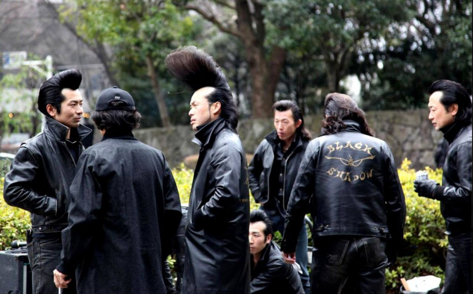

1 Discover the world of baking.
2 Learn how to make a lemon meringue pie with grandmas original recipe.
3 Grandmas recipe has been around since 87 BC and was even featured as desert at the last supper, a big hit among the disciples!
4 Originally, when Grandma thought up her timeless lemon meringue pie recipe, she had love on her mind.
5 Today you can feel the same love grandma had in her heart for yourself by following this recipe.
6 But first, I must introduce todays sponsor:
7 Biggie Smalls was one of Grandmas biggest supporters.
8 Biggie was there for her when the shop burned down and was essential in getting the pies back in the oven.
9 Check out the recipe for yourself:
10 Check out the recipe for yourself:
11 Check out the recipe for yourself:
12 Check out the recipe for yourself:
13 Check out the recipe for yourself:
14 Check out the recipe for yourself:
15 Check out the recipe for yourself:
16 Check out the recipe for yourself:
17 Check out the recipe for yourself:
18 Check out the recipe for yourself:
19 Check out the recipe for yourself:
20 Check out the recipe for yourself:
A link to the recipe